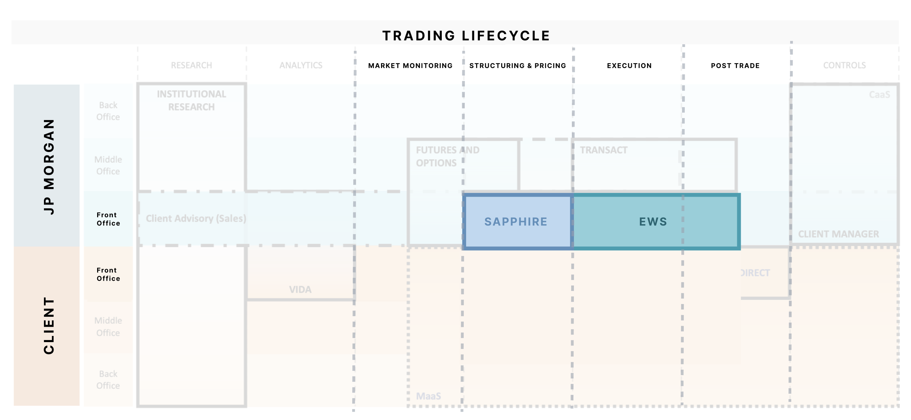
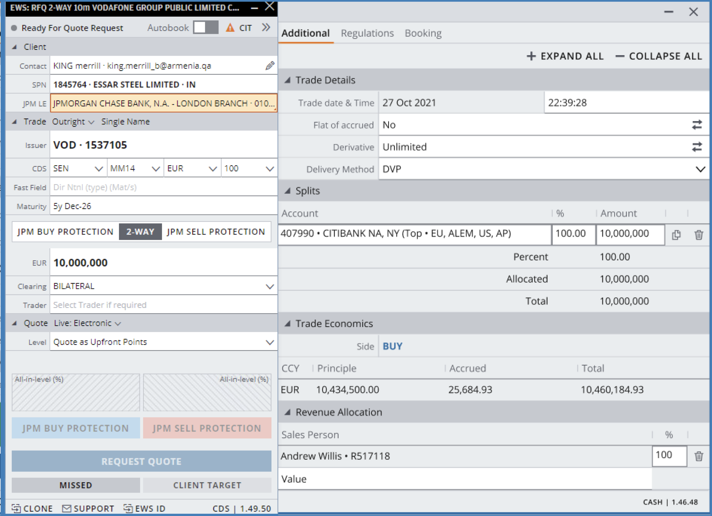
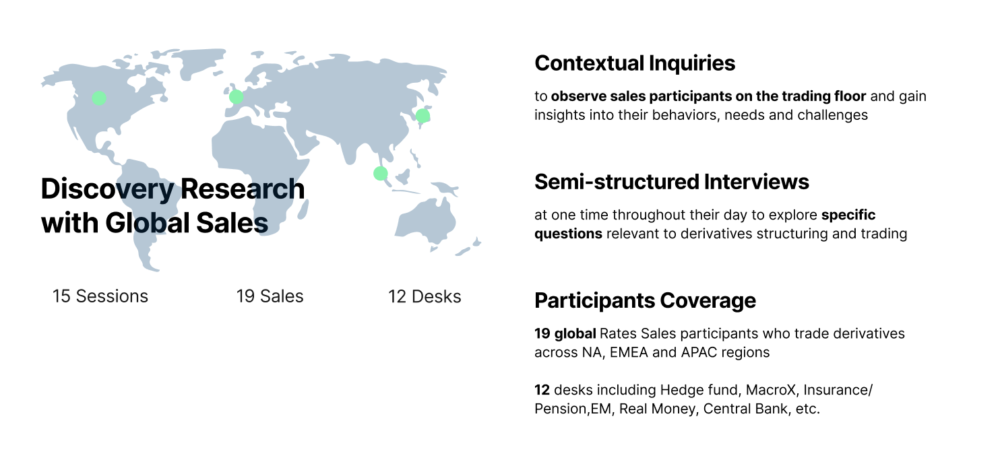
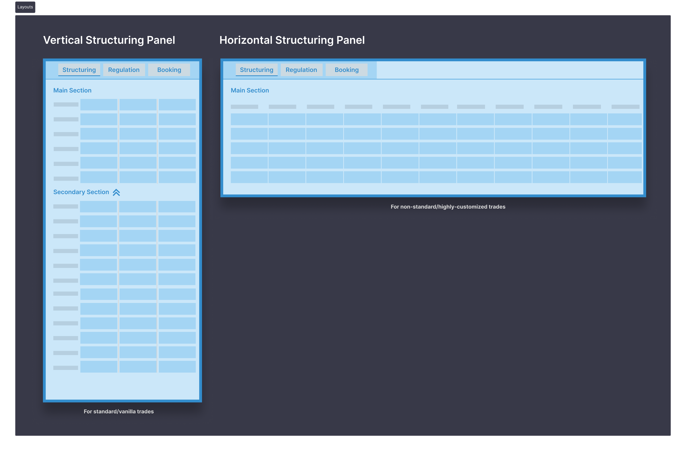
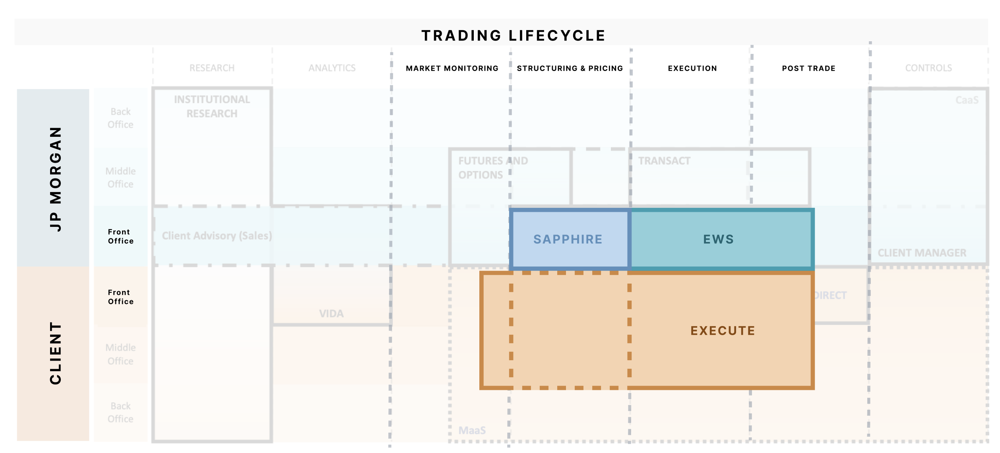
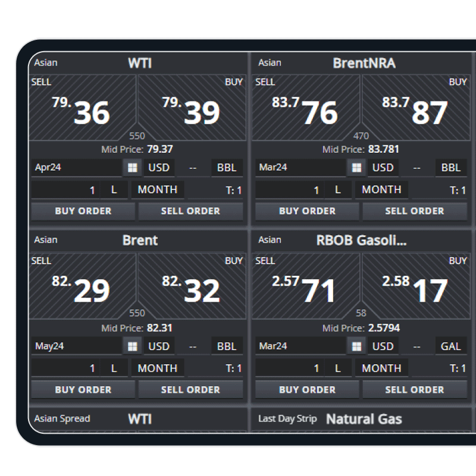
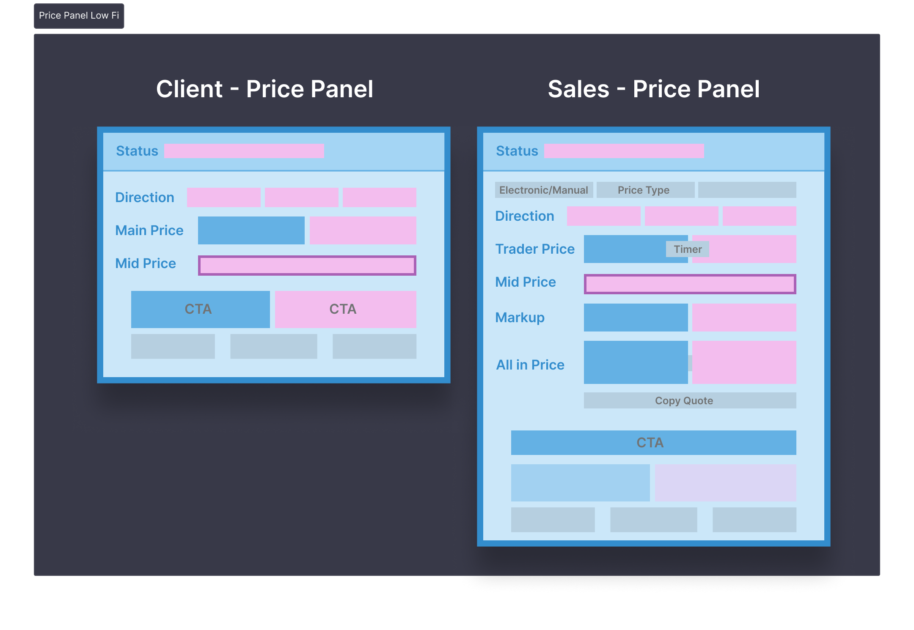
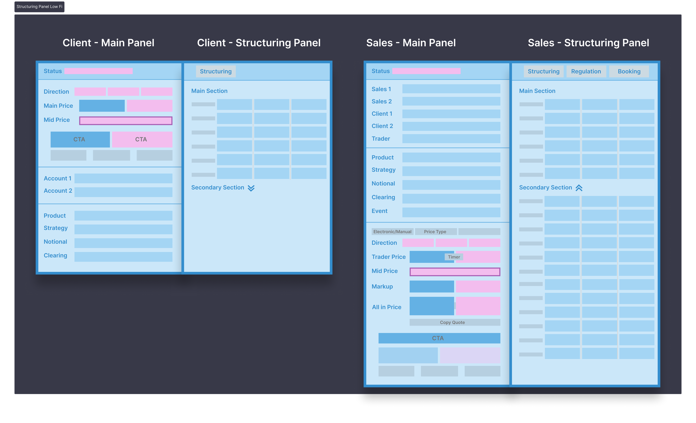
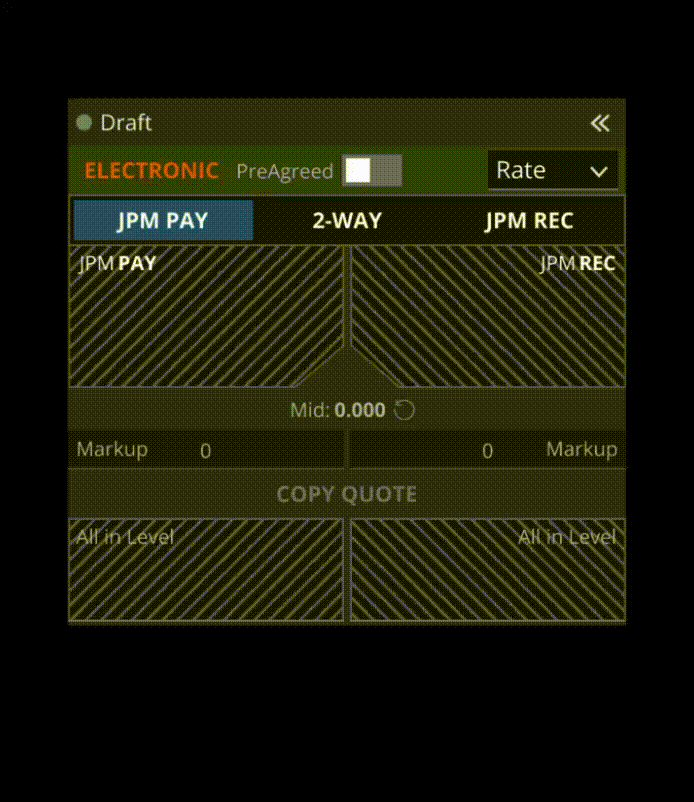

Sapphire has been the primary tool for rates derivatives sales at JPMorgan for over 30 years. It mainly covers the structuring part of the trading lifecycle. Structuring means building the custom contract behind a trade: the amount, the dates, the rates, and up to 35 other details like payment frequency and day-count rules. Unlike buying a stock, every rates derivatives trade is assembled to order. Salespeople have built decades of muscle memory around Sapphire's shortcuts, field layouts, and quirks.
The mandate was to decommission Sapphire and migrate the full sales workflow onto EWS, JPMorgan's internal sales execution platform.

Where the two tools sit in the trading lifecycle. Sapphire covers structuring and pricing for JPMorgan's sales desk. EWS extends through execution and post-trade. Both are internal, front-office tools.
Sapphire — the 30-year-old structuring and pricing tool. Every field visible at once, dense grids, decades of accumulated shortcuts.

EWS — the internal sales execution platform the workflow would migrate to, shown here with a credit derivatives RFQ ticket.
1 / 3
Discovery
Researching the salespeople before designing their replacement tool
This research was in service of one goal: understanding the salespeople whose 30-year-old tool we were about to take away, so the migration to EWS wouldn't break the workflows their jobs depend on.
The project came to me with requirements already written: technical specifications with no user needs and no existing research on this user group. I pushed back and advocated for dedicated research time before any design work started. Over several weeks of conversations with my manager and product stakeholders, the roadmap was reshaped to include a proper discovery phase.
The research plan
Dedicated time for contextual inquiry research covering all rates desks, not just one product group. The buy-in took weeks, but the result was a research phase that gave us a real understanding of sales workflows before any design work started.
On the floor
With buy-in secured, I ran discovery research with salespeople on the trading floor: 15 sessions with 19 global rates sales participants across 12 desks, spanning North America, EMEA, and APAC. The research combined contextual inquiries, observing salespeople at their desks to understand behaviors, needs, and challenges, with semi-structured interviews exploring specific questions about derivatives structuring and trading. The goal was to understand not just what Sapphire did, but why people still depended on it after 30 years.

Discovery research coverage: 19 global rates sales participants across 12 desks, including hedge fund, macro, insurance/pension, EM, real money, and central bank desks.Final clustering from discovery research with rates derivatives salespeople.
Four themes emerged:
I want to feel in control of the trades I work on
Monitor live market levels constantly
Validate trade details against client inquiries
Sapphire's features feel critical to doing the job
Prefer voice for big trades where nuance matters
Inefficiencies in the current workflow
Repetitive manual data entry across multiple tools
No way to save templates or reuse models
Slow, fragmented booking process
Takes too long to quote certain swaps (e.g. fly)
I lack confidence in current and future systems
Sapphire freezes and has frequent bugs
Incorrect default values cause errors
Skeptical the new tool can handle trade nuance
Doubt CT (Context Tool, a natural language processing tool) can accurately parse trade inquiries
Cognitive load management
Constantly switching attention across systems
Personal color-coding systems to track trades
Quote-to-book flow needs to be more automated
Standard swaps don't need modeling, just fast booking
Across all four themes, one thing was clear: salespeople are already overwhelmed by information every day and don't fully trust the systems behind it. The design had to simplify what's shown: surface only what's necessary for the trade at hand, and hide the rest.
Key insight: layout should match trade complexity
Salespeople naturally structure complex trades horizontally (multi-leg swaps with all legs visible side by side) and simple trades vertically (compact fields, minimal edits, fast execution). Sapphire didn't adapt to either. It showed everything, always.

Two layouts for two kinds of trades. Vertical for standard, vanilla trades: compact, minimal input. Horizontal for non-standard, highly customized trades: fields laid out in columns for side-by-side comparison.
The fields analysis behind this confirmed the scale of the problem. Non-standardized swaps require over 35 configurable fields that vary by currency, strategy, and region. On top of that, market data refresh was manual. Sales had to actively refresh pricing in a window where clients respond in 10–20 seconds.
The User
The rates derivatives salesperson
The research synthesized into a generalized persona for the primary user of the new tool.
M
Rates Derivatives Sales
Marcus Webb
"If the price isn't back in seconds, the client has already asked another bank."
Info
Age36
RoleVP, Rates Sales
DeskHedge Fund / Macro
LocationNew York
Personality
IntrovertExtrovert
AnalyticalCreative
BusyTime rich
MessyOrganized
IndependentTeam player
About
Covers institutional clients trading interest rate swaps across hedge fund and macro accounts. His day splits between executing high-volume vanilla swaps as fast as possible and structuring complex multi-leg trades with traders. He communicates over chat and voice, and has deep muscle memory in Sapphire after years on the desk.
Goals
Win the trade inside the 10–20 second pricing window
Judge the trader price, set the right markup, track the all-in
Move fluidly between fast vanilla execution and complex structuring
Needs
All pricing components visible at once: trader price, markup, all-in
Keyboard shortcuts, density, minimal clicks
Live market data with no manual refresh
Pain Points
Manual re-entry between chat and tools
Every field shown at once, regardless of trade complexity
Compliance steps that interrupt the flow at the moment speed matters
Frustrations
Prices go stale while waiting for clients to respond
Repetitive manual tasks that add no value to the trade
Expertise
Expert
Speed Need
Seconds
Prices Seen
Trader + Markup + All-in
Customization
Full control, 35+ fields
Design & Testing
The horizontal ticket
With the research insights and persona in place, the design direction was clear. EWS already had a vertical ticket layout, used for booking workflows in other asset classes. But a vertical layout can't handle non-standard swaps with 35+ customizable fields: too much scrolling, no way to compare legs side by side.
So I designed a horizontal, grid-based ticket for the sales workflow, with trade details laid out in columns and collapsible sections for booking, quotes, and RFQ details.
The horizontal ticket prototype: trade details in a grid, with collapsible Booking, Quotes, and RFQ sections.
I then tested the design with 13 salespeople across North America, EMEA, and APAC, all current Sapphire and EWS users, in task-based think-aloud sessions. Participants worked through three scenarios on an interactive prototype: trading a vanilla swap end to end, creating a trade manually, and updating trade parameters, while I measured completion, time on task, and satisfaction.
What testing found
92% task completion across the three scenarios. The grid-based ticket worked: capturing, executing, updating, and booking trades all tested without significant issues.
Pricing surfaced an engineering gap. Sales wanted the market mid price streamed, not manually refreshed. This went to the engineering backlog as a priority.
The horizontal ticket was validated and the build was underway. Then the mandate shifted.
The Pivot
As the team started building, the mandate shifted.
A larger organizational change redrew the goal. Decommissioning Sapphire and migrating to EWS was no longer the full story: the new mandate was to extend the workflow onto Execute, JPMorgan's client-facing platform, and unify internal sales, external clients, and external sales and traders under one system.
Part 2 · One Platform for Everyone
The platform landscape now looked different. Execute, previously covering only client-facing execution, would absorb the sales workflow too:

The landscape after the pivot. Execute (orange) spans the client layer from structuring through post-trade, and now absorbs the sales workflow being built for EWS.

Execute, JPMorgan's client-facing platform. At the time it covered FX and commodities, shown here with its price tile interface. Rates derivatives would bring a far more complex asset class onto it.
This was a significant expansion. Execute was built for clients, not salespeople. Since it's a single-dealer platform where clients come to trade, both a sales ticket and a client ticket were required. The same trade needed to work for the salesperson structuring it and the client executing it.
I mapped the workflow priorities across the three user groups the platform would need to serve.
Internal Sales
Customizability. Deep control over trade parameters.
Speed above all. Shortcuts, density, minimal clicks.
Full pricing detail. Markup, all-in, per-leg economics.
External Clients
Clarity. Clean interface with familiar conventions.
Compliance first. Guardrails over configurability.
One price. Not the pricing mechanics behind it.
Workflow assessment across three user groups. Internal sales prioritize customizability and quick execution. External clients prioritize clean UI and compliance. External sales and traders fall in between.
1 / 2
The profiles are visibly different. Internal salespeople need deep customizability and fast execution. External clients need a clean, compliant interface. Designing for one audience would underserve the other. This confirmed the need for a modular architecture: shared trade economics, audience-specific everything else.
The research remained directly relevant. The users were the same, the asset class was the same, the pain points were the same. The platform had changed. The problem hadn't.
Scoping
Knowing what not to build first
Rates derivatives spans plain vanilla swaps to highly customized instruments. Building for all of it on day 1 wasn't feasible, so we started with standard swaps.
From the research
"The basic swap flow can be automated."
"I don't model standard swaps."
The rationale: standard swaps are the majority of trading volume, salespeople just need to execute them fast, and they're what clients trade most and will most likely self-serve. Complex instruments stay with sales and were scoped for later phases.
Design · Modular Architecture
One ticket, two audiences
How might we...
Build a single ticket architecture that scales in detail with the user's expertise?
Although we were designing for two distinct user groups with different priorities, at its core this is a trading ticket, and the key stages of the workflow are largely the same for everyone. That made the architecture decision clear: the ticket would be modular. Build the common fields that work for both sales and clients first, then layer on the details each group needs. Sales, as the group with deeper trading literacy, gets more.
Every section of the ticket went through this process, including admin details like account and product. But two sections demanded the most design attention:
1. The price panel
The bread and butter for both groups. Because this flow is built for speed, the panel had to deliver maximum ease of use while displaying every pricing detail clearly, with what counts as "every detail" differing by audience.
2. The economics panel
Where structuring happens. With more than 35 customizable fields, the challenge was revealing the right level of detail per user group without overwhelming either experience.
Prioritizing vanilla trades also settled the layout question. Because standard swaps are relatively simple and built for fast execution, the ticket defaults to the vertical layout for both sales and clients: compact, quick to scan, minimal input. The horizontal layout stays one step away for the complex trades that need it.
Design · Lo-Fi
Working out the differences in wireframes
I explored lo-fi wireframes for the two focus areas, plus the regulatory flow, to work out the key differences between the sales and client tickets while keeping the same modular layout.
The price panel
Sales care about more prices than clients. Clients see one thing: the price JPMorgan quotes them. Sales need to see whether the trader price is fair, decide what markup to add on top, and track the all-in price, the sum of the two, which is what they care about most. Same panel pattern, different depth of pricing detail.

Client price panel (left) shows one main price. Sales price panel (right) adds trader price with timer, markup, all-in price, and mode controls.
The structuring panel
Sapphire showed every structuring field at once, regardless of trade complexity. The new design reveals fields as needed: they auto-display based on the product and strategy selected, and the level of detail adapts to the audience. The client panel keeps the secondary section collapsed by default, while sales gets the full field set plus Regulation and Booking tabs.

The client structuring panel (left) keeps the secondary section collapsed by default. The sales panel (right) adds Regulation and Booking tabs and expands the full field set.
Sales ticket (left) and client ticket (right) in compact view. The shared sections are called out.
1 / 2
The regulatory flow
Before any trade could proceed, the regulatory checks had to pass.
From the research
"As long as it's not a Do Not Trade, I don't need to look at it."
Salespeople aren't reviewing the compliance panel; they're trying to close the trade before prices move. So my focus was reducing friction: hide checks that already passed, auto-expand the failures that need action, and move the flow forward automatically once everything is green.
Lo-fi wireframe: the compliance panel with pass, fail, and warning states.
Design · Hi-Fi
The full flows in high fidelity
The regulatory flow
1. Launch Error rows shown with red highlights. DNT rows expanded by default. Submit locked.
2. See All All rows displayed. Grouped: Error → Warning → Success. Warning and success rows collapsed.
3. Override User fills in required fields. Submit button unlocks once content is entered.
4. Passed with Warning Overridden rows change to warning style. Banner updates to "CIT Passed with Warning."
5. CIT Passed All green. Panel hidden by default. If reopened, all rows collapsed with green checks.
The ticket
The client ticket surfaces the full economics panel — identical to what sales sees — while replacing sales-specific workflow fields with the account details a client needs to execute.
Client ticket — all sections open. Left annotations mark client-facing sections (Workflow Stage, Trade Summary, Key Params, Quote Panel, Account Details). Right annotations mark the Economics panel structure shared with sales (Per Leg Price, Cross Stream Details, Per Stream Details).Sales ticket, all sections open. Economics tab shows the full horizontal layout for a multi-leg fly swap (2Y/5Y/10Y). Purple annotations mark each section's purpose.
Horizontal layout: multi-leg fly swap with all legs visible side by side. Per-leg pricing, directions, and stream details are comparable at a glance.
Vertical layout: standard IRS with compact fields. Space-efficient for trades where most parameters are pre-populated and minimal edits are needed.
The goal was to make the common case fast and the complex case accessible. Standard swaps should feel effortless.
Testing & Validation
Testing the core trading flow
With scope, content structure, parameter editability, and visual hierarchy aligned, I moved to high-fidelity design of a vanilla IRS ticket incorporating all agreed changes, then ran usability testing with sales users across global rates desks.
The prototype
The prototype covered the full IRS Outright electronic sales flow: from Draft through the compliance gate, through the RFQ lifecycle, and into booking. Three stages were tested end to end:
Stage 1: Compliance gate. CIT Failure locks the quote panel until checks are overridden. Once cleared, the ticket advances to Ready for RFQ and the price panel becomes interactive.
The RFQ panel was also tested as a focused question within the same study. All the key calls to action live in that panel: initiating an RFQ, stopping it, quoting the client, and refreshing. It needed to match how sales think about price and direction during a live trade.

One of the RFQ panel flows tested.
Methodology
I used two methods to cover breadth and depth:
25
Unmoderated testing
Participants completed a Qualtrics survey at their convenience, clicking through a prototype of the IRS Outright sales electronic flow from Ready for RFQ to Booking Success. Metrics collected: task completion rate, time to completion, and CSTAT score. Participants also selected their preferred RFQ panel layout from four options.
5
Moderated testing
The designer was present with each participant. They clicked through the same prototype and gave real-time feedback on the same key screens as the survey.
Results
30
Global Rates Sales (NA, EMEA, APAC)
7.3/10
Confidence Score of the E2E Flow
92%
Task Success Rate (most tasks except RFQ)
13.42s
Avg Time to Complete E2E Flow (Unmoderated)
3.23s
Avg Time on Task (Unmoderated)
RFQ panel redesign
Participants evaluated four RFQ panel layout options against their mental model and trading habits:
RFQ panel layout testing: Option B won (13 of 25 votes). Option D was second (9 of 25). Both were preferred because All-in Level was displayed larger and clearer.
B
Winner — Default layout
52%
Sales who actively manage markup chose B because the information order (Trader Level, Markup, All-in Level) matched how they think through a trade.
D
Runner-up — Settings toggle
36%
Sales who rarely touch markup preferred D because hiding that layer reduced noise — All-in Level was still prominent, just with less surrounding context they didn't need.
Both groups wanted All-in Level prominent. They diverged on markup context. Option B became the default; Option D as a settings toggle, letting each salesperson configure the panel to match how they trade.
Outcomes
Impact
80+
Sales Onboarded
130+
Internal Users
100%
USD Vanilla Swap Automated
The product is live across global desks in North America, EMEA, and APAC. Over 80 salespeople use it daily to structure and execute trades, with more teams onboarding as the rollout continues. 100% of USD vanilla swap volume, the most commonly traded instrument in the rates derivatives space, is now fully automated on the platform.
The client-facing ticket, which lets external clients execute trades directly on the platform, is going live this year. The architecture and design patterns I built for the sales experience are the foundation it's being built on: shared economics, modular structure, the same regulatory framework.
This is an ongoing project. The research from the discovery phase continues to shape prioritization: which instruments to add, which user groups to onboard next, how to sequence the roadmap. The foundation built here is what makes each subsequent launch faster.
Reflection
What I learned
Replacing a 30-year-old tool isn't a design problem. It's a trust problem. Salespeople had built their careers around Sapphire. Earning their trust required showing the platform could handle the same complexity, not just claiming it could.
The discovery research was the most valuable investment. Floor observations and interviews gave me a level of understanding that no requirements document could have provided. When I could speak to a salesperson's workflow in their own language, the resistance dropped.
What I'd do differently
See the other flows through to testing. Usability testing covered the vanilla IRS flow, which was the right place to start. As the product expanded to swaptions and multi-leg strategies, those flows went straight to engineering without the same validation. I'd push to test each new flow before handoff.
Push for richer metrics in regular reporting. The numbers tracked so far, user count and percentage of volume automated, tell you adoption, not quality. I'd want reporting to include benchmark metrics: how the platform compares to the voice and chat workflows it replaced in speed, error rate, and re-quote frequency. That's the data that shows whether the design is actually working.
Research Timeline · June – October 2022
Contextual inquiry across NA, EMEA, and APAC rates desks — followed by synthesis, design iterations, usability testing, and implementation.